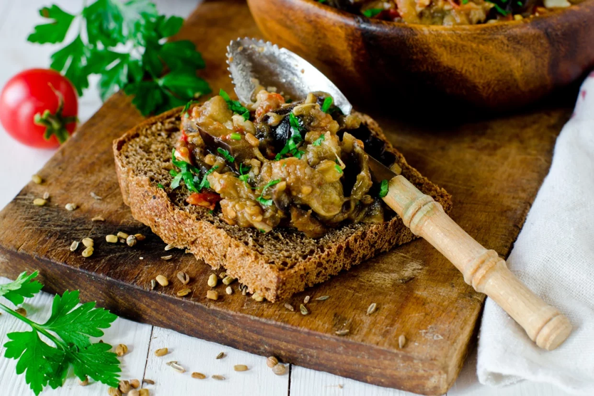

приготовление:
-
Вымыть баклажаны, отрезать кончики и нарезать крупными кубиками. Переложить в кастрюлю с кипящей водой и варить до момента, когда баклажаны начнут становиться мягкими и менять цвет на более бледный.
-
Разогреть сковороду с оливковым маслом. Слить воду с баклажанов и переложить их на сковороду. Добавить чеснок из расчёта примерно 2 крупных или 3 средних зубчика на 1 средний баклажан.
-
Вымыть и нарезать чернослив: его должно быть примерно вдвое меньше, чем баклажанов. Добавить на сковороду, немного посолить и перемешать. Слегка разминать баклажаны лопаткой, объединяя все ингредиенты и превращая их в пасту. Добиваться полностью однородной массы не нужно: если кожица баклажанов не разминается, это нормально. Обжаривать 5–7 минут.
-
Дать пасте остыть. Хранить в холодильнике и подавать на хлебе в тёплом или холодном виде.